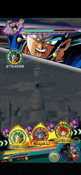
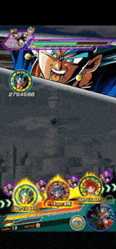

| Inicio | Modos de Juego | Summons | Tienda | Tier List | Sugerencias |
| Introducción | Dokkan Battle es un juego de móvil de rol y acción desarrollado por Akatsuki y distribuido por Bandai Namco Entertainment. El juego está basado en el popular manga y anime japonés Dragon Ball. Combina elementos de rol, estrategia y puzles con la emocionante acción de la serie Dragon Ball Z. Los jugadores disfrutan coleccionando y mejorando a sus personajes favoritos mientras participan en diversas batallas y eventos. |

|
1. Colección de Personajes: Los jugadores pueden recolectar una variedad de personajes de Dragon Ball de diferentes rarezas y tipos. Cada personaje tiene sus propias estadísticas, habilidades y enlaces. 2. Rareza de Personajes: Los personajes en Dokkan Battle se clasifican en varias rarezas, desde "N" (común) hasta "LR" (legendario). Cuanto mayor sea la rareza, más poderoso suele ser el personaje. 3. Tipos de Personajes: Los personajes se dividen en diferentes tipos, como AGL (agilidad), TEQ (tecnología), INT (inteligencia), STR (fuerza) y PHY (físico). Cada tipo tiene ventajas y desventajas en relación con los demás, siguiendo un sistema de fortalezas y debilidades. 4. Despertar Dokkan: Los personajes pueden mejorar su rareza y estadísticas a través del proceso de "Despertar Dokkan". Esto implica recolectar ciertos objetos y cumplir con requisitos específicos para mejorar significativamente a un personaje. 5. Líderes y Equipos: Los jugadores forman equipos de hasta seis personajes. Un personaje líder proporciona bonificaciones al equipo según ciertos criterios. Crear un equipo equilibrado y aprovechar las sinergias entre los personajes es clave para el éxito en batallas. 6. Rotacion y Enlaces: Durante las batallas, los jugadores organizan sus personajes en formaciones y pueden rotarlos cada turno. Los personajes pueden tener enlaces que otorgan beneficios adicionales cuando están en la misma rotación. 7. Super Ataques: Cada personaje tiene un Super Ataque especial que puede desencadenarse después de acumular suficiente energía durante la batalla. Estos ataques suelen ser espectaculares y causan un gran daño. 8. Eventos y Desafíos: El juego presenta una variedad de eventos y desafíos que ofrecen recompensas valiosas, incluidos nuevos personajes y objetos de mejora. Los jugadores deben adaptar sus equipos a los desafíos específicos para tener éxito. |
 


|
El apartado "Tienda" en Dragon Ball Z Dokkan Battle es una sección dedicada a transacciones dentro del juego, donde los jugadores pueden adquirir diversos objetos, personajes y recursos utilizando la moneda del juego, como las "Dragon Stones". Además, la tienda a menudo presenta ofertas y paquetes especiales que permiten a los jugadores obtener elementos exclusivos y mejorar sus equipos de forma más rápida. |
|
¡Bienvenido a la Tier List de Dragon Ball Z Dokkan Battle! Una guía esencial que clasifica a tus personajes favoritos según su potencia y utilidad estratégica. Desde Super Saiyan hasta los dioses, esta lista te revelará quiénes son los verdaderos titanes para que puedas construir equipos imparables y enfrentarte con confianza a los desafíos más épicos. ¡Prepárate para la acción y domina el universo de Dokkan Battle con la Tier List como tu aliada! ¡Que la aventura comience! |
|
¡Aprecio tu opinión! En mi constante esfuerzo por mejorar, cada sugerencia que me brindas me ayuda a perfeccionar la experiencia del usuario y hacer que mi página sea aún mejor. Estoy aquí para escucharte, así que no dudes en compartir tus ideas y comentarios. ¡Gracias por ser parte de mi proceso de mejora continua! |